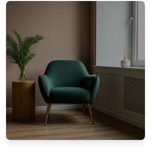

Restauración espiritual, donde estés.
Accede a un espacio de sanidad integral que combina la excelencia clínica con fundamentos bíblicos, sin barreras geográficas y con total privacidad.
Por qué elegir nuestra terapia virtual
Diseñamos una experiencia que prioriza tu bienestar emocional y espiritual en cada interacción.
Máxima Comodidad
Sin desplazamientos ni salas de espera. Recibe apoyo desde la seguridad y el confort de tu propio hogar.

Enfoque Bíblico
Psicólogos titulados que integran principios de la fe para una sanidad profunda y duradera.
Especialistas Globales
Conéctate con los mejores profesionales en diversos países, encontrando el perfil ideal para ti.
Privacidad Total
Plataformas seguras y confidenciales. Tus datos y tus conversaciones están protegidos bajo los más altos estándares.
¿Cómo funciona?
Tres pasos sencillos para comenzar tu camino hacia la sanidad.
Elige tu psicólogo
Explora nuestra red de profesionales certificados y filtra según su especialidad y enfoque clínico-bíblico.
Agenda tu cita
Selecciona el horario que mejor se adapte a tu rutina. Contamos con amplia disponibilidad en diferentes zonas horarias.
Conéctate por video
Recibe el enlace de tu sesión y únete desde cualquier dispositivo. Un espacio seguro de escucha y sanidad te espera.